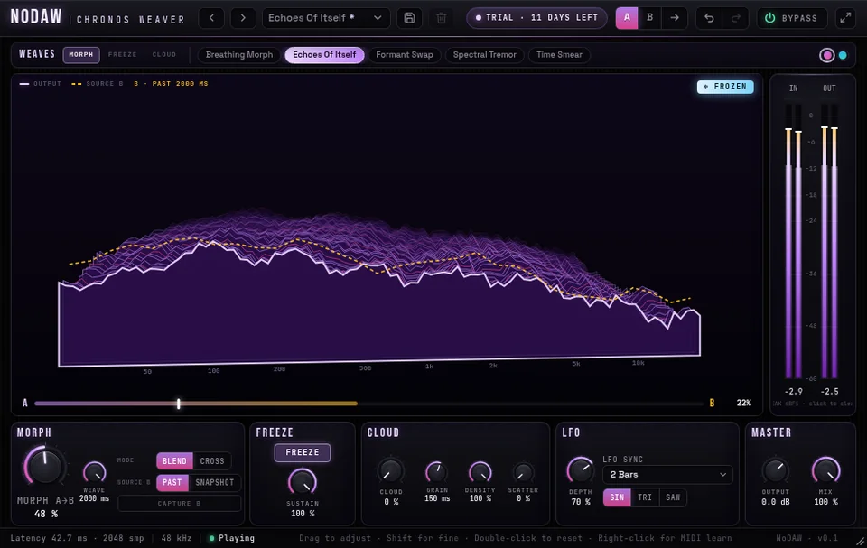
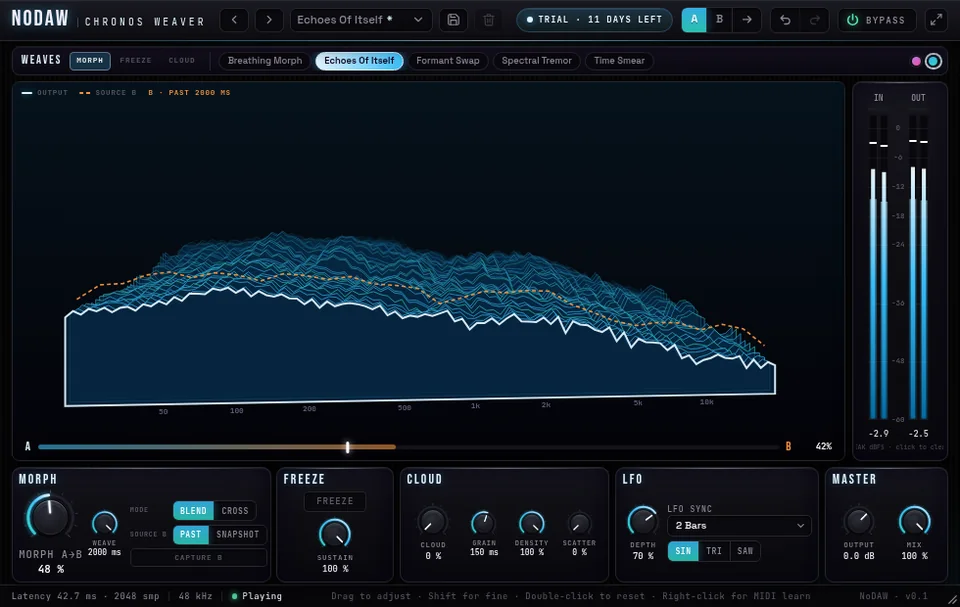

Weave the spectrum
through time.
Morph your signal toward its own past or a captured snapshot, freeze a moment and sustain it, or smear it into a spectral cloud, all shown on a 3D spectrum you can orbit.

Snapshot presets need a B: press Capture B while the loop plays. Freeze holds the moment you switch it on. Drop any audio file on this panel to use your own. Double-click a slider to reset it. Space plays and stops. Export renders offline with the current settings (it captures B at the start of the render).
What’s real here.
- PortedThe engine: the STFT engine (2048-point FFT at 44.1/48 kHz, 4096 above 50 kHz): Blend and Cross morph toward the past or a captured snapshot, the phase-vocoder freeze with sustain, the spectral cloud, and the tempo-synced morph LFO.
- ParamsAll 16 parameters plus bypass, with the plugin’s own ranges, units and curves (17 host parameters in the plugin).
- PresetsAll 12 factory presets, by name and value, read from the plugin’s preset files.
- A/BBypass uses the engine’s own crossfade to the latency-delayed dry signal, so the switch never clicks.
- Plugin onlyKeeping the captured snapshot with your session (here B lasts until you press Stop)
- Plugin onlyThe plugin’s 3D orbit view and ice visuals (here B shows as a dashed line on the spectrum)
- Plugin onlyDAW automation, MIDI learn, undo/redo, A/B slots and user presets
- LimitsNo sidechain input yet, so source B is the snapshot or the past. One morph target, not four slots. Latency is 4096 samples above 50 kHz.
- StatusThe Chronos Weaver plugin (VST3 + CLAP, Windows x64) is in development: unreleased, not for sale, no price yet.
Chronos Weaver, stage by stage.

Drag to orbit
A 3D spectrum of frequency, time and level, with source B on the front edge and a morph track showing the knob and live LFO.

Freeze
Capture the spectrum and sustain it with phase-vocoder phase advance, from about 1 s to infinite.

Nebula or ice
Two colourways. Cloud smears each bin in time (Grain 5–2000 ms), gated by Density and phase-scattered.
Source B
Past is the signal’s own spectrum Weave ms ago. Snapshot is a capture you take with Capture B, saved with the session.
Blend or Cross
Blend is a log-magnitude morph. Cross puts B’s spectral envelope on A’s fine structure.
Morph LFO
Depth, tempo sync from ¼ to 4 bars, and sine, triangle or ramp shapes.
 ScrewChopped & screwed
ScrewChopped & screwed RacksModular channel rack
RacksModular channel rack Harmonic SpaceSpectral Space Designer
Harmonic SpaceSpectral Space Designer Chronos Dynamic EQSeven dynamic bands
Chronos Dynamic EQSeven dynamic bands Temporal Pitch PortalTempo-synced time warp
Temporal Pitch PortalTempo-synced time warp